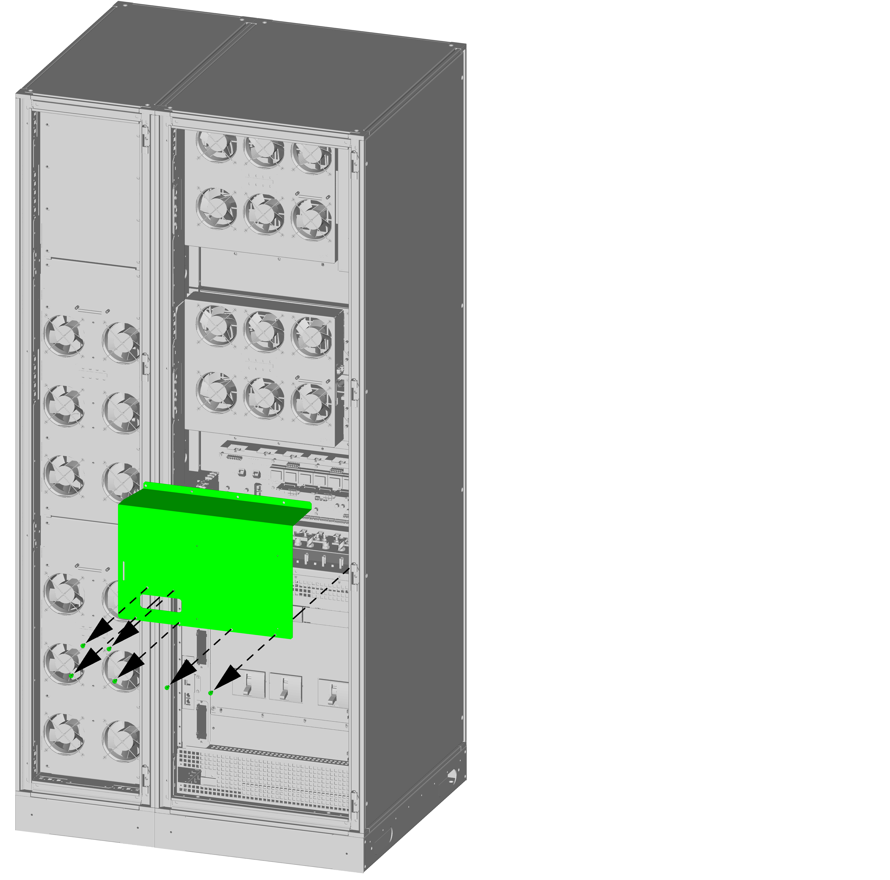
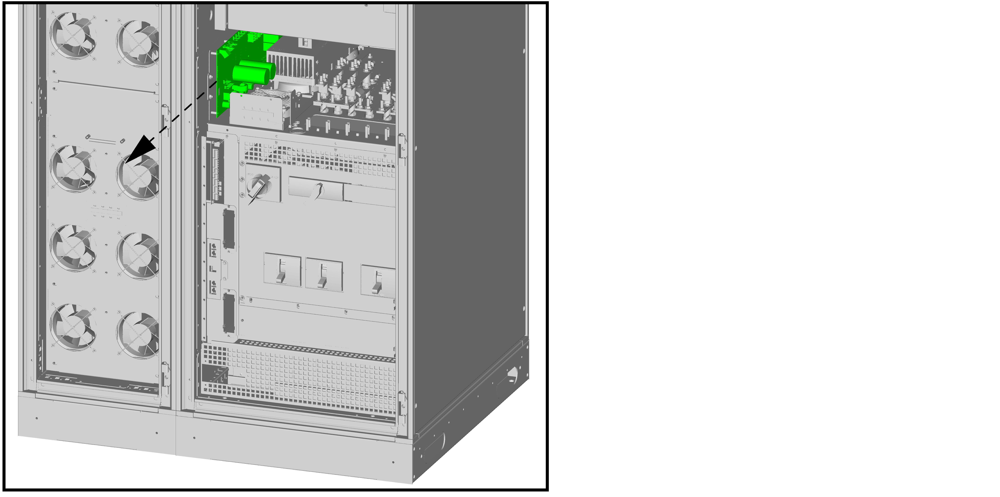

Replace the Static Switch Controller Board 0J–0P2560
Reality EMEA10 kVA20 kVA30 kVA40 kVA50 kVA60 kVA80 kVA
DANGER
hazard of electric shock, explosion, or arc flash
Electrical equipment must be installed, operated, serviced, and
maintained only by qualified personnel.
Apply appropriate personal protective equipment (PPE) and follow
safe electrical work practices.
Disconnection devices for AC and DC must be provided by others,
be readily accessible, and the function of the disconnect device marked
for its function.
Turn off all power supplying the UPS system before working on
or inside the equipment.
Before working on the UPS system, check for hazardous voltage
between all terminals including the protective earth.
The UPS contains an internal energy source. Hazardous voltage
can be present even when disconnected from the mains supply. Before
installing or servicing the UPS system, ensure that the units are
OFF and that mains and batteries are disconnected. Wait five minutes
before opening the UPS to allow the capacitors to discharge.
The UPS must be properly earthed/grounded and due to a high leakage
current, the earthing/grounding conductor must be connected first.
Note: This procedure shows the 80
kVA UPS but the procedure is identical for all UPS systems.
Loosen the six screws and remove the indicated plate.

Note the location of the cables connected to the interface
board and disconnect the cables.
Loosen the four bolts and the nut and slide out the interface
plate with the interface board.
Note the location of the cables connected to the static
switch controller board and disconnect the cables.
Loosen the nine screws and slide out the static switch
controller board.

On the new replacement static switch controller board:
Cut the 127 V and 220 V connections.
Cut the connections as per the UPS system configuration
as shown in the table below.
Voltage
Phase
1
2
3
4
5
220
1–phase
cut connection
cut connection
-
cut connection
cut connection
230
1–phase
cut connection
cut connection
cut connection
-
cut connection
240
1–phase
cut connection
cut connection
cut connection
cut connection
-
380
3–phase
cut connection
-
cut connection
cut connection
cut connection
400
3–phase
cut connection
cut connection
-
cut connection
cut connection
415
3–phase
cut connection
cut connection
cut connection
-
cut connection
On a 3–phase UPS system configuration: Cut the
connection.
Cut the three connections.
Figure 1. 0P2560 Static Switch Controller Board
Reverse the procedure for installation of the replacement
static switch controller board.